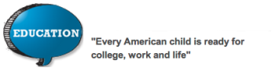
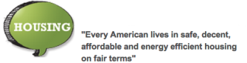
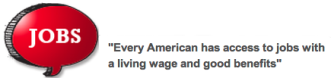
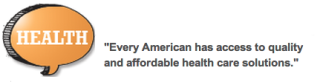

In 1910, the National Urban League (NUL) started a movement in the African-American community toward establishing economic self-reliance, parity, power and civil rights. Are you ready to join “The Movement”? If so, look no further than Thursday Network (TN). We are the Washington, DC and Suburban MD chapter of the National Urban League Young Professionals (NULYP).
Founded in 1992, Thursday Network is comprised of more than 130 young professionals committed to serving the Washington Metropolitan area through community programs and partnership that address the Empowerment Goals of the National Urban League. The mission of TN is to provide a forum for young adults, ages 21 – 40, to focus their energies on community service, professional development, and political involvement.
Annually, the organization sponsors several events such as Young Blacks Give Back Month, the Empowerment Academy mentoring program and awards “I EMPOWER” scholarships to local high school seniors. In addition to service programs, Thursday Network provides personal & professional development through workshops, seminars and networking opportunities.
Thursday Network is proud of its history as one of the most progressive service-oriented organizations in the DC metropolitan area. We invite you to join “the movement” and show that young blacks really do give back.
Learn more about Thursday Network and review our TN 2015-2016 Annual Report!
To be a catalyst for change in the Greater Washington community by serving as a training ground for our members to improve community and self.
To provide a forum for young professionals, ages 21 – 40, to assist the Greater Washington Urban League in achieving its goals and to focus their energies on community service and foster personal and professional development, social consciousness, civic engagement and economic empowerment.
Thursday Network is committed to supporting the I Am Empowered Goals of the National Urban League. We pledge to responsibly commit our time and talent to ensure that the nation is empowered to achieve the following goals by 2025:
   The Greater Washington Urban League was founded in 1938 and is one of more than 100 affiliates of the National Urban League. A major civil rights and social services organization, the League has been dealing effectively with a wide range of social and economic problems for 78 years. The 40-member Board of Directors that governs the League represents a cross-section of individuals from the metropolitan Washington area. An Advisory Board provides expertise and guidance to support the League’s work.
The League’s Thursday Network (TN) auxiliary is a leadership development vehicle for young professionals, ages 21 to 40, who are interested in volunteer service to the community. Its mission is to assist the League in its goals and develop outreach programs that have positive influences on African-American youth.
Thursday Network provides a platform that fosters professional development, social consciousness, civic engagement and entrepreneurship through community service projects, social and cultural outings, personal & professional workshops and seminars, mentoring/tutoring, and networking.